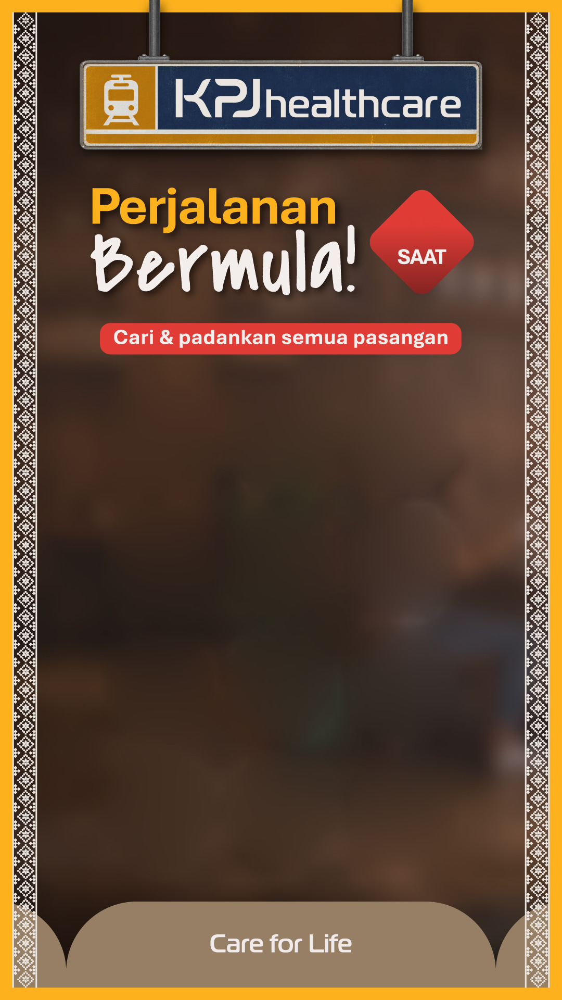
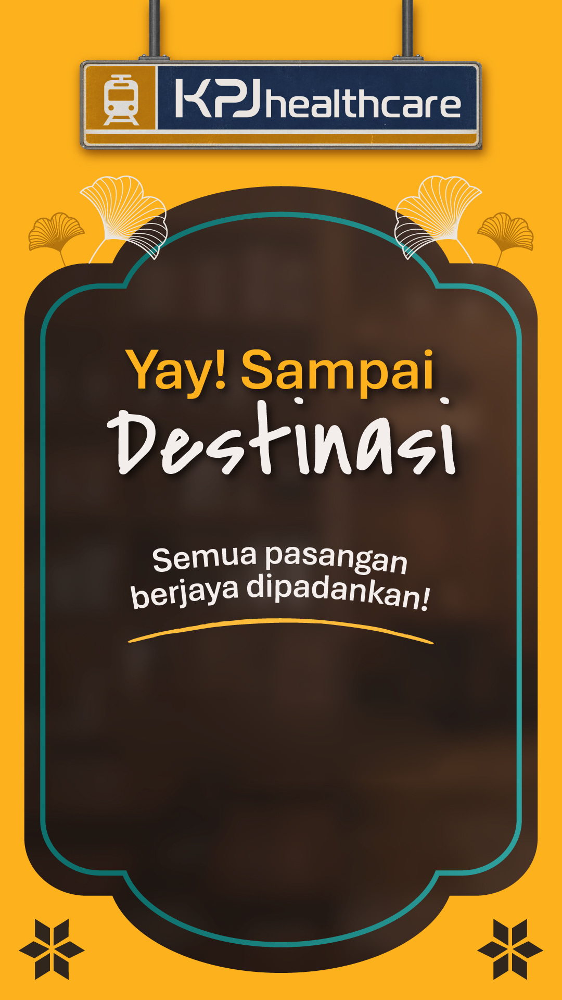
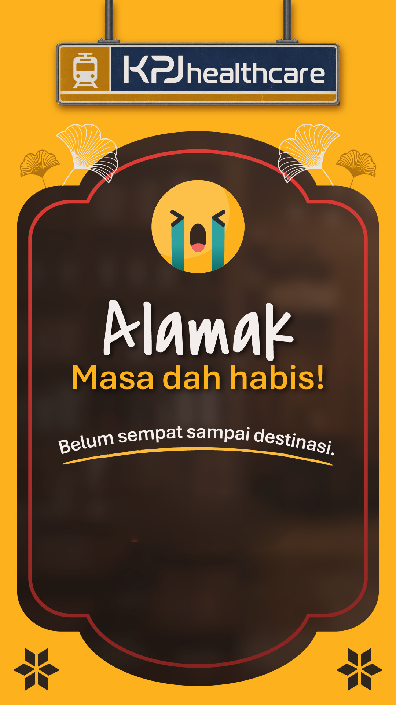
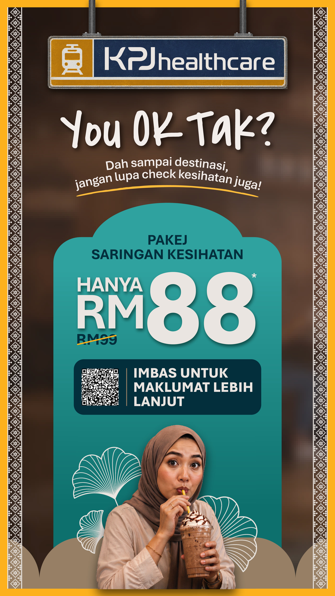

3
返回



设定
关闭
一、时间
游戏限时（秒）
开局倒数（秒）
成功门槛（组）
最后一页停留（秒）
结果页无人点击自动跳转（秒）
倒数结束的字样
二、翻牌手感
翻牌动画
配对成功停顿
配对失败回翻
快点加速
抢先翻牌
三、音乐与音效
背景音乐
试听
选择
清除
背景音乐播放
成功页音效
试听
选择
清除
失败页音效
试听
选择
清除
翻牌音效
试听
选择
清除
翻牌错误音效
试听
选择
清除
配对成功音效
试听
选择
清除
按钮音效
试听
选择
清除
背景音乐音量
70%
音效音量
80%
四、牌面图片（6 组）
恢复预设牌面
查看参考图
五、配置打包
导出当前配置
恢复出厂设置